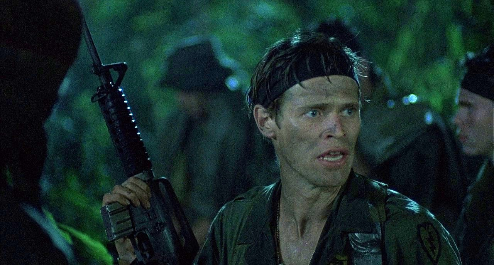
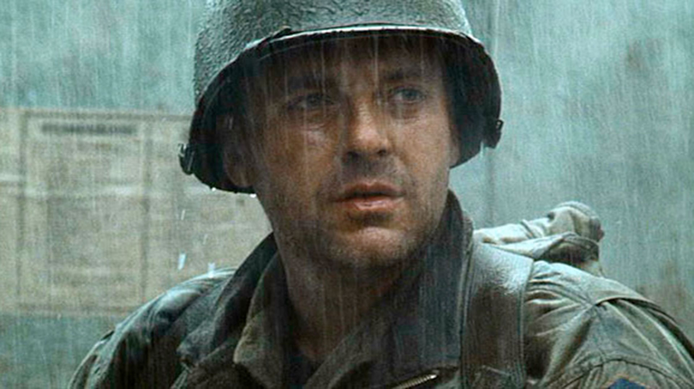
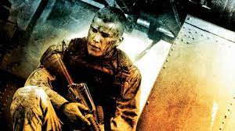
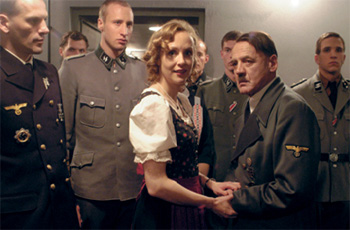
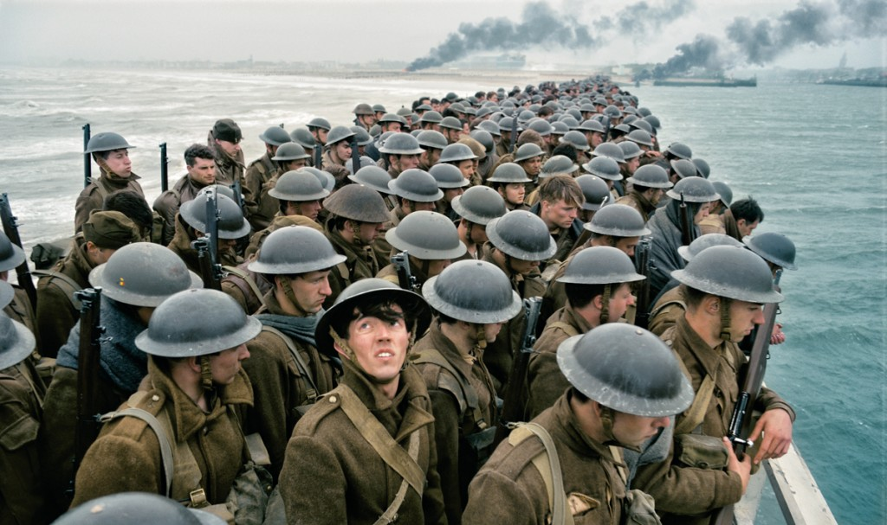
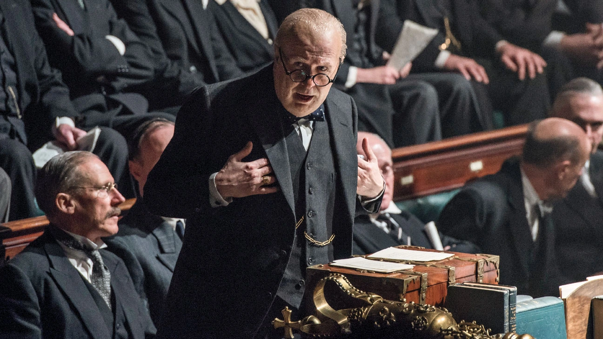
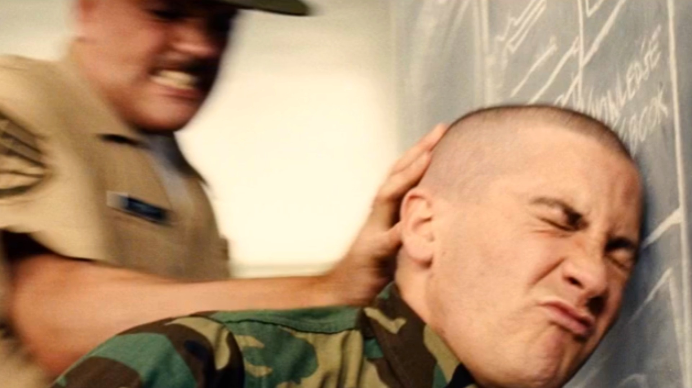
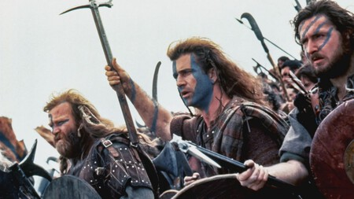
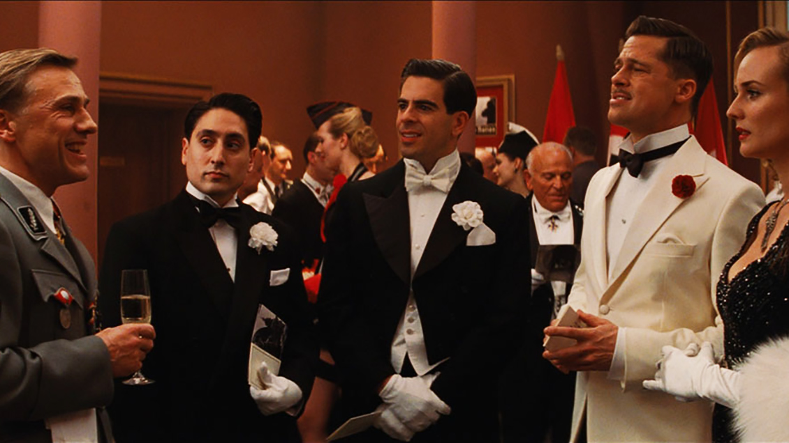

Apocalypse now
Una épica del cine bélico, poética y política. Con más introspección que acción, pero todos deberíamos verla una vez en nuestras vidas.
Pelotón
Más terrenal que Apocalypse Now, la crudeza de la guerra desde la perspectiva del soldado raso. La inocencia es la primera víctima de una guerra.
Rescatando al soldado Ryan
Mucha acción y escenas emocionantes en una de las mejores obras de Spielberg. Quizás no nos gustaría tanto con otro director, pero viendo las grandes cosas que logró su reparto, no nos quejamos.
Black Hawk down
Una película que va al hueso, no anda con vueltas políticas ni sensiblerías. Combates crudos y realistas, una cinematografía de primera, calidad en cada toma.
La caída
Increíble racconto de los últimos días de Adolf Hitler con una impecable personificación del protagonista Bruno Ganz. Una crónica historica que no tiene desperdicio.
Dunkerque
De lo mejor que se haya producido en los últimos años sobre la SGM. Christopher Nolan vuelve a alucinarnos con su maestría técnica y capacidad para guiar actores hacia la grandeza.
The darkest hour
Pocos personajes han sido tan desafiantes y venerados como Winston Churchill. Gary Oldman le da vida sin esfuerzo a la representación del otro líder que cambió la historia en los años 40.
Jarhead
Una bélica sin guerra? Nos metemos en la cabeza de un joven que no sabe qué hacer de su vida, por lo que se enlista en los marines para seguir sin saber qué hace con su vida. Atípica, pero provocadora y muy interesante.
Corazón valiente
Un clásico del cine histórico, tan venerada como criticada, pero impactante sin lugar a dudas. De las que marcan una era.
Bastardos sin gloria
Imaginativa historia ambientada en la Francia ocupada de los años 40. Escenas memorables para volver a ver varias veces. Con el sello indiscutido de Tarantino y grandes actuaciones, en particular del antes no tan conocido Christoph Waltz.